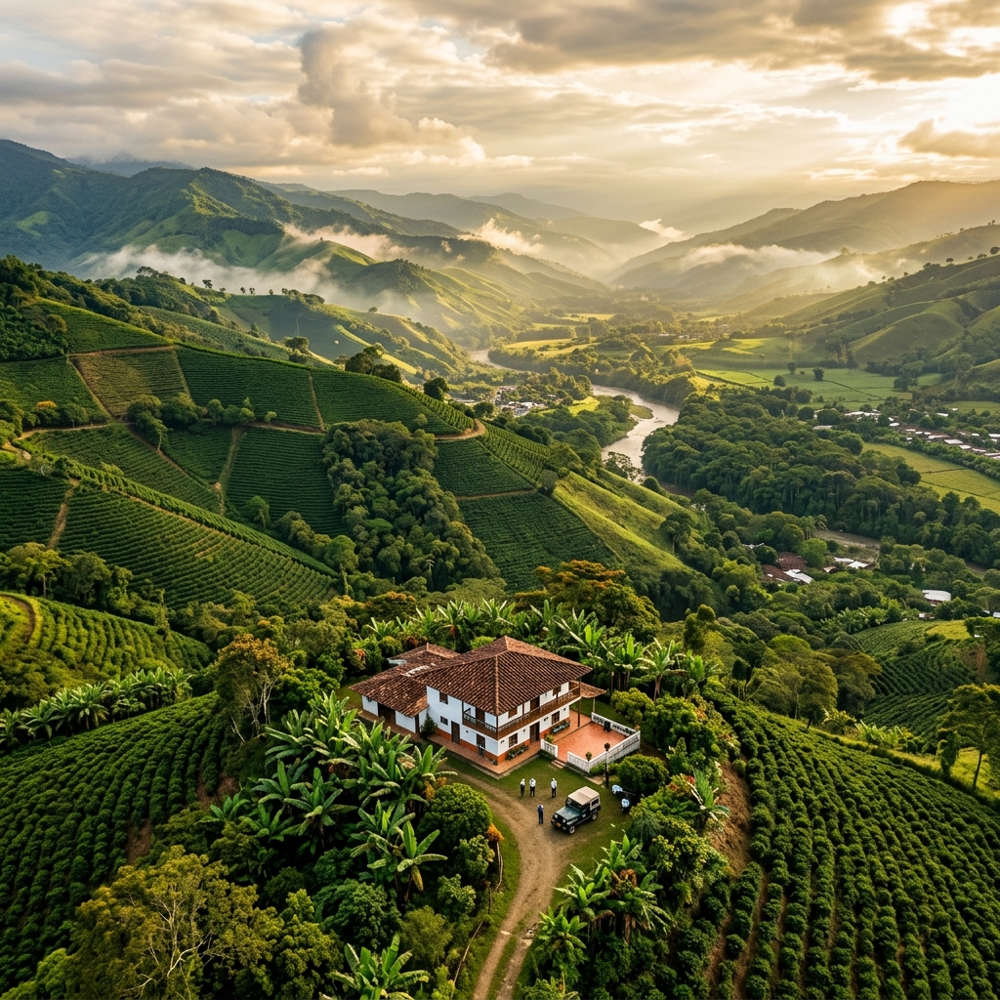
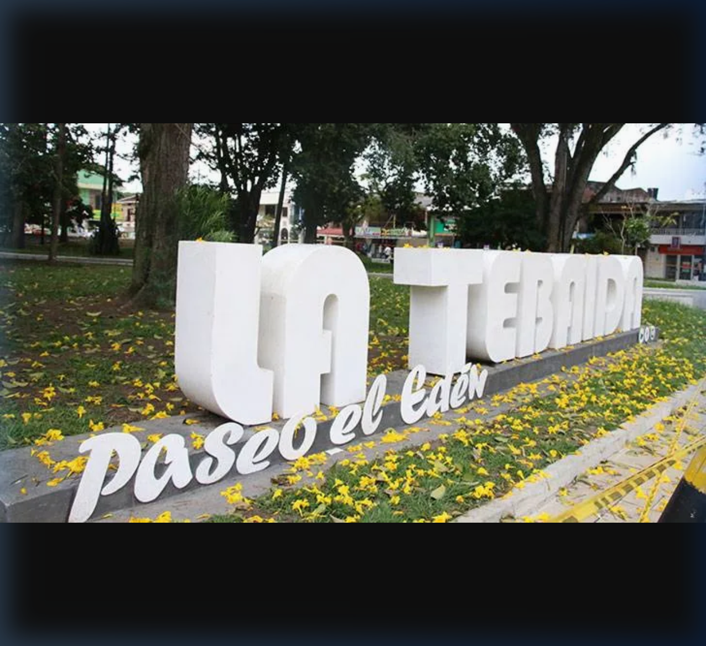
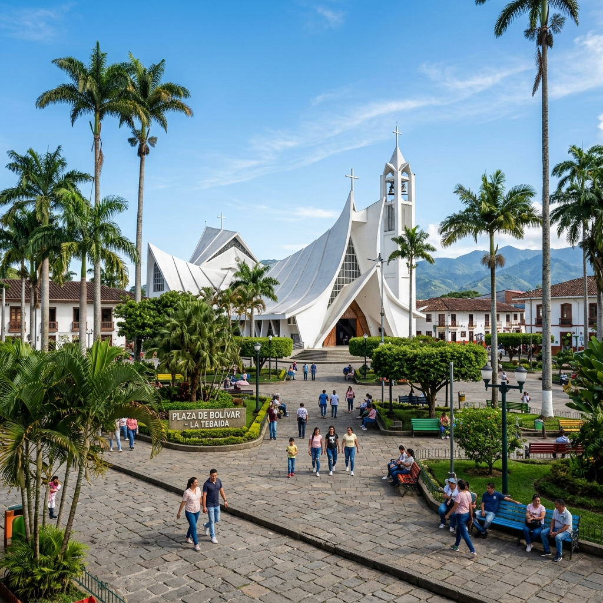
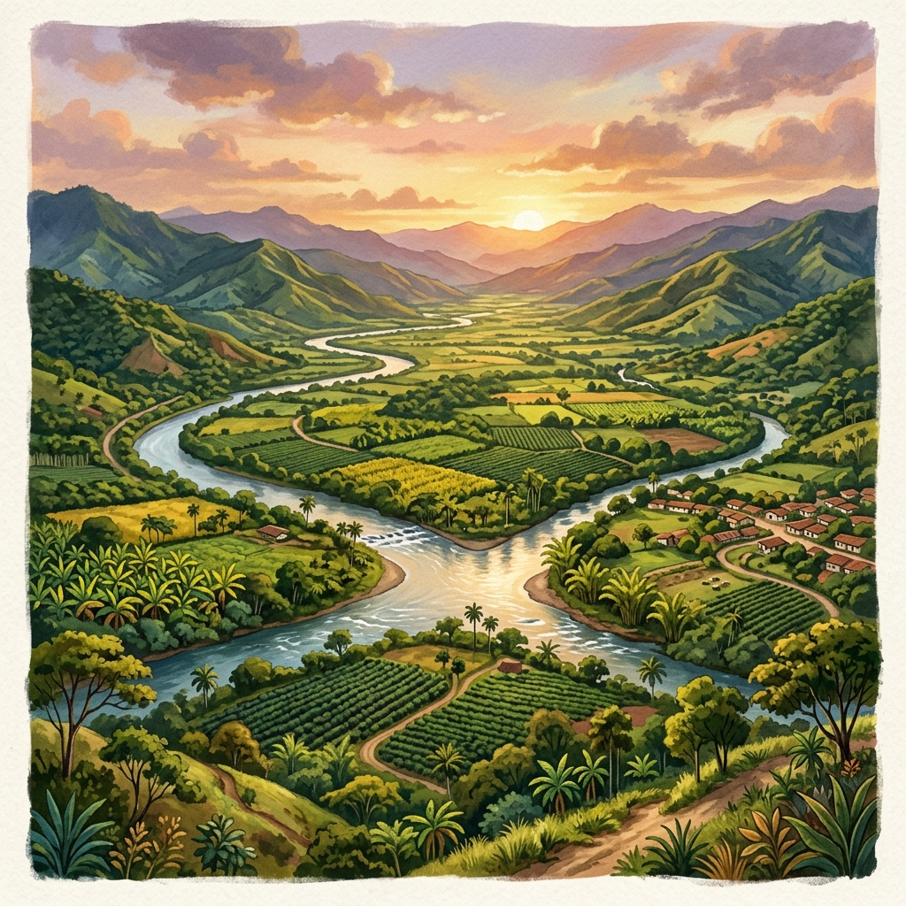

☕ Municipio de Quindío · Colombia · Patrimonio Cafetero
Edén Tropical del Quindío
Una tierra donde el valle abraza a los ríos y los ríos abrazan al mar.
1.200 msnm
La menor altitud del Quindío, lo que define su clima cálido y exuberante vegetación tropical.
Confluencia Hídrica
Punto donde el Río Quindío y el Río Barragán se unen para formar el majestuoso Río La Vieja.
89 km²
Limita con Armenia, Montenegro, Calarcá y el departamento del Valle del Cauca. Posición estratégica en el occidente del Quindío.
Bosque Húmedo Tropical
Vegetación exuberante propicia para cultivos de cítricos, plátano, caña panelera y café.
🖱️ Mueve el cursor sobre el perfil para explorar la altitud
El municipio más cálido del departamento del Quindío, donde el sol brilla con fuerza tropical.
📍 Lat 4.45° N · Long 75.79° O
Entre 18°C y 28°C a lo largo del año. El más cálido del Quindío.
Dos temporadas lluviosas: marzo–mayo y septiembre–noviembre.
Favorece la producción de cítricos y cítricos tropicales.
Humedad tropical que nutre su biodiversidad única.
Más de un siglo de historia, resiliencia y progreso.
Familias provenientes de Antioquia y Tolima se establecen en estas fértiles tierras, atraídas por la riqueza del suelo y el clima generoso del occidente del Quindío.
El 24 de junio de 1916 se oficializa la fundación del municipio por Pedro Arango y Luis Enrique Arango, dando nombre a uno de los pueblos más vibrantes del Quindío.
La llegada del Ferrocarril del Pacífico convierte a La Tebaida en un nodo estratégico para el transporte de café hacia los puertos del Pacífico, catapultando su economía.
Inaugura el Aeropuerto Internacional El Edén, posicionando a La Tebaida como la puerta de entrada al Eje Cafetero desde el mundo.
El terremoto del Eje Cafetero sacude a Colombia. La Tebaida se reconstruye de las cenizas con arquitectura moderna y planificación urbana, emergiendo más fuerte que nunca.
La región del Eje Cafetero, incluyendo La Tebaida, es declarada Patrimonio de la Humanidad por la UNESCO, reconociendo su cultura e identidad cafetera única.
Con su zona franca, el corredor gastronómico y un aeropuerto internacional, La Tebaida lidera el desarrollo económico y turístico de la región con visión de ciudad.
Hechos sorprendentes que hacen única a La Tebaida.
El Aeropuerto El Edén, ubicado en su territorio, es el único aeropuerto internacional del Quindío y el principal acceso aéreo al Eje Cafetero.
Mientras Armenia promedia 18°C, La Tebaida alcanza cómodamente 23°C, siendo el destino perfecto para quienes buscan el calor tropical en el corazón cafetero.
En el Valle de Maravelez, dentro del territorio de La Tebaida, confluyen el Río Quindío y el Río Barragán para formar el Río La Vieja, que luego desemboca en el Cauca. ✅ Dato verificado.
Su clima cálido y suelo fértil la convierten en la mayor productora de naranjas y mandarinas del departamento, con exportaciones a nivel nacional.
Famosa por su "corredor gastronómico" a orillas de la vía principal, donde se concentran los mejores restaurantes de bandeja paisa y fritanga del Quindío.
Forma parte del Paisaje Cultural Cafetero, declarado Patrimonio Mundial por la UNESCO en 2011 por su excepcional valor cultural y natural.
Haz clic en cada imagen para explorarla en detalle.



Descubre los puntos de interés de La Tebaida.